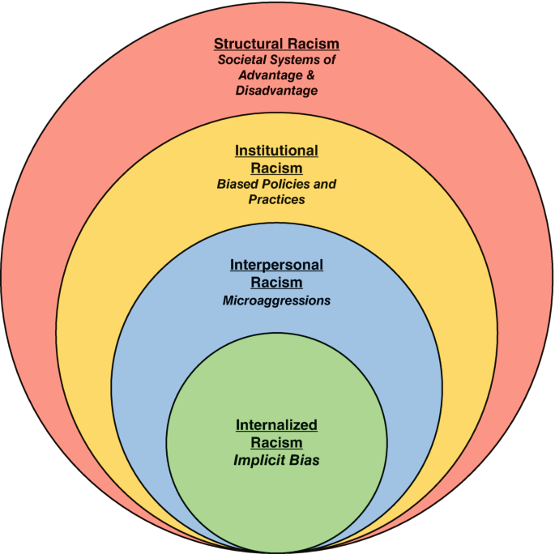

Inequality not only impacts the wealth of nations, but also determin the health of its people. According to the World Health Organization, health inequities are systematic differences in the health status of different population groups. This means that a persons access to proper healthcare is determined by their income, status, or even race.
What is Structural Racism?

Background
Structural Racism is a type of racism where laws, institutional, and organizational policies that are made over time give an advantage to a certain group of people, and has unfair treatment to another group based on their race or ethnicity. Structural racism comes from a pattern of economic, cultural, and social differences between groups, and grows into a “norm” especially in policies.
Structural Racism is a serious problem and can lead to higher risks of disease and death in certain racial or ethnic groups. Because this type of racism comes from the scaffolding, or root of the system itself, which is our laws, it is important to identify and move forward from this type of racism in particular. Especially when the way it harms people is avoidable.
Examples of Structural Racism
In the Philippines, structural racism is one of the biggest problems faced hindering proper healthcare. There is a significant gap in healthcare access between wealthy and poor Filipinos. Cities in places like Metro Manila have many newer hospitals, meanwhile about 70-80 million Filipinos do not have access to this, and many rarely, or never, see a doctor (Evangelista et al., 2022).
Where do we come in?
This page is a guide on what structural racism is, why it is important to identify and change, and what its implications are on the lives of people. We especially touch on Structural Racism in healthcare. This topic in particular is prevalent in the Philippines, yet is rarely addressed. With the large archipelago, Filipinos are not as united as we may think, and racism is prevalent against ourselves. The page will guide us on the specifics of structural racism in healthcare, and small ways we as the people can change the system, and how the government may facilitate it.
Call to Action
We believe that the Filipino people should take collective action in fighting against structural racism, especially in healthcare. The Philippine’s healthcare system is already costly, inefficient, and incredibly unfair to its workers. This is exacerbated by the lack of proper facilities in most areas, even though over 50 million Filipinos live in rural areas, most hospitals are located in cities and urban environments. Moreover, the government should be held responsible for this problem, as structural racism stems primarily from laws and policies. We advocate for transparency, accountability, and change.